1. Abstract
The LemGendary AI Studio GUI is a hardware-aware command center engineered
to make deep learning dataset synthesis, neural network training, and cloud
deployment accessible to everyone from senior machine learning researchers to
high school students and non-technical hobbyists. When something goes wrong, the
Report Issue button packages a description, annotated screenshots and recent
telemetry for the maintainers (chapter 13).
The Gardening Model Rule
To ensure absolute operational clarity, every control, workflow, and safeguard
in this manual is designed according to the Gardening Model Rule:
If a 75-year-old grandmother wants to train an AI model using photos of her
garden roses, tomato plants, and soil to automatically detect plant diseases and
enhance low-light garden photographs, she should be able to complete the entire
pipeline from environment setup to Kaggle cloud publishing purely by clicking
intuitive buttons in the GUI, with zero command-line commands, zero code
editing, and zero risk of freezing her computer.
The system achieves this through three foundational engineering principles:
- Deterministic One-Click Automation: All complex toolchains, Python
virtual environments, CUDA drivers, wheel resolutions, and dependencies are
provisioned automatically through the 7-Stage Clean Install Pipeline.
- Nuclear Memory Protection (The Sawtooth Governor): When training complex
vision models, the GUI continuously probes hardware VRAM. If memory
approaches capacity, the system automatically downscales batch sizes and
applies dynamic gradient accumulation, guaranteeing that your machine never
suffers an Out-of-Memory (OOM) crash or system freeze.
- Comprehensive Contextual Guidance: Every single interactive button,
switch, input field, and status indicator is accompanied by a contextual
hover icon (
?) delivering instant, plain-English explanations of what the
control does, what files are affected, and what safeguards are active.
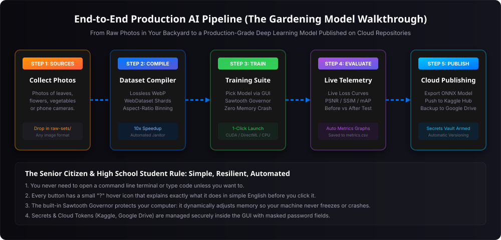
2. Interface Topology & Visual Navigation Matrix
The AI Studio interface is organized into persistent visual regions designed for
ergonomic operation. Every element, card, and control in the live interface is
indexed below with corresponding operational workflows and safety boundaries.
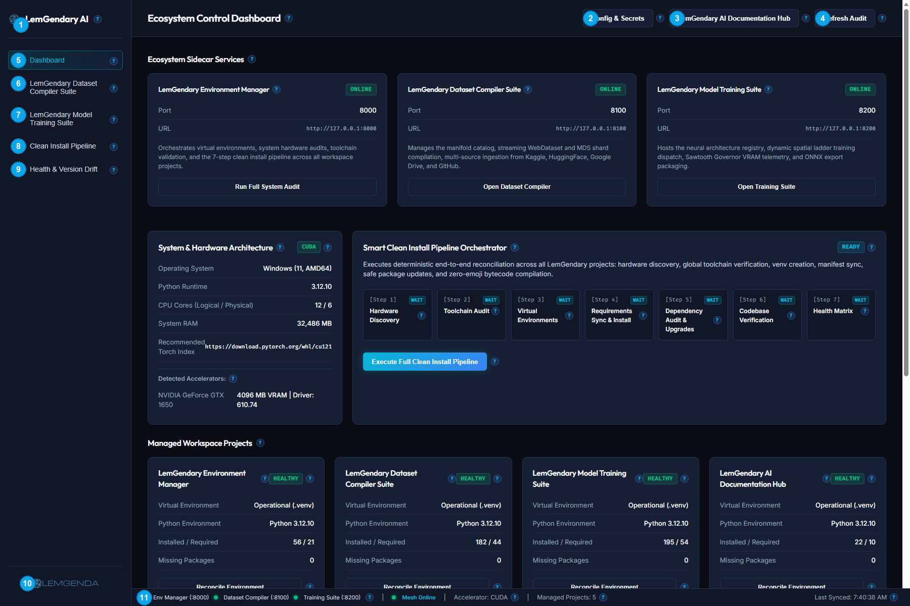
2.1 Workspace Global Shell Elements & Numbered Navigation Guide
The live screen capture above displays the complete primary application frame
including header, persistent sidebar navigation, active dashboard viewport, and
the sticky status footer:
- Brand Title & Brand Icon: Displays LemGendary AI alongside the official
vector icon (lemgenda-icon.svg). The title is not a link; the sidebar footer
logo (item 12) links to the portal.
- Config & Secrets Header Button: Opens the Universal Configuration,
Registry Editor & Secrets Vault modal for editing YAML manifests and managing
Kaggle, Google Drive, GitHub and MetaTrader 5 credentials (chapter 3).
- Report Issue Header Button (
header-btn-report-issue): Opens the Report
Issue form with the module set to the current tab. You describe the problem,
attach annotated screenshots and recent telemetry, and the LemGendary
Environment Manager saves a ZIP report and opens your mail client (chapter
13).
- Tests & Diagnostics Header Button (
header-btn-test-modal): Opens the
Test & Diagnostic Orchestrator, which runs the 1-epoch fleet smoke test or
the in-process unit tests of the LemGendary Model Training Suite and
LemGendary Dataset Compiler Suite (section 3.3).
- LemGendary AI Documentation Hub Button: Opens the local Documentation Hub
in your browser. The address comes from the LemGendary Environment Manager
(
GET /api/docs/status), which serves the hub; the button is disabled, with
the reason as tooltip, while the Environment Manager is offline or has no
docs checkout (chapter 10).
- Refresh Audit Button (
dash-btn-refresh-audit): Reloads hardware, health
and pipeline state from the Environment Manager and re-probes all three
sidecars.
- Dashboard Tab (
tab-dashboard): Shows hardware cards, sidecar service
tiles, project health cards and the live event console.
- LemGendary Dataset Compiler Suite Tab (
tab-datasets): Shows the
manifold compiler, Kaggle synchronization and the manifold catalog
(./lemgendary-datasets/).
- LemGendary Model Training Suite Tab (
tab-training): Shows the model
cards, Sawtooth Governor VRAM controls, spatial ladders and training dispatch
(./lemgendary-training-suite/).
- Clean Install Pipeline Tab (
tab-pipeline): Shows the 7-step
provisioning sequence, Run Pipeline and the Clean Install confirmation
(chapter 4).
- Health & Version Drift Tab (
tab-health): Shows host prerequisites, the
Python drift matrix, the GUI's npm packages and the maintenance actions
(chapter 8).
- Brand Signature Logo (Sidebar Footer): The official brand signature
(lemgenda-logo.svg), linking to https://www.lemgenda.hr/.
- System Status Bar: Sticky footer reporting the connection state of each
sidecar.
Callout bindings (control type; endpoint or action):
- 1. Brand Title & Icon (Brand Heading; None): Shows the product name and
icon.
- 2. Config & Secrets (Header Button; Opens the config modal): Manifest
editing and write-only secrets.
- 3. Report Issue (Header Button;
POST /api/bug-report on send): Opens the
Report Issue form.
- 4. Tests & Diagnostics (Header Button; Opens the test modal): Fleet smoke
test and unit tests.
- 5. Documentation Hub (Header Button;
GET /api/docs/status): Opens the
hub address in the browser.
- 6. Refresh Audit (Header Button;
GET /api/hardware, /api/health):
Reloads state and re-probes sidecars.
- 7. Dashboard Tab (Navigation Button; None): Opens the dashboard view.
- 8. Dataset Compiler Tab (Navigation Button; None): Opens the compiler
view.
- 9. Model Training Tab (Navigation Button; None): Opens the training view.
- 10. Clean Install Tab (Navigation Button; None): Opens the pipeline view.
- 11. Health & Drift Tab (Navigation Button; None): Opens the health view.
- 12. Brand Signature Logo (Navigation Link; https://www.lemgenda.hr/):
Opens the portal.
- 13. System Status Bar (Status Indicator; Liveness probes): Shows each
sidecar's connection state.
Tip: New in this release: the Report Issue and Tests & Diagnostics buttons sit
next to Config & Secrets in the header. The screenshot above predates them.
2.2 Tripartite Sidecar Process Control & Auto-Start
The Ecosystem Sidecar Services grid permanently monitors and coordinates the
three local microservices:
- LemGendary Environment Manager (
Port 8000): Core orchestrator and
validation authority (./lemgendary-env-manager/).
- LemGendary Dataset Compiler Suite (
Port 8100): Manifold compiler and
streaming storage server (./lemgendary-datasets/).
- LemGendary Model Training Suite (
Port 8200): Neural architecture
training and evaluation engine (./lemgendary-training-suite/).
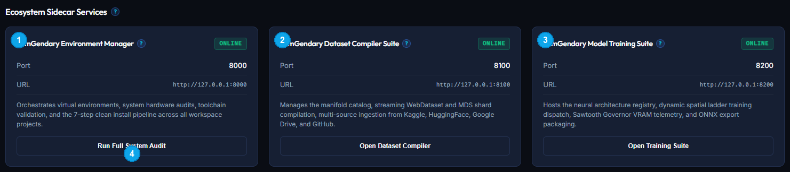
Ecosystem Sidecar Cards Numbered Reference
- Environment Manager Service Card: Identifies the primary port 8000
governance daemon governing virtual environments, hardware discovery, and
registry validation (
ONLINE, PID, uptime, active endpoints).
- Dataset Compiler Suite Service Card: Identifies the port 8100 service
managing WebDataset, Parquet, and MDS manifolds (
ONLINE, PID, uptime,
direct navigation button).
- Model Training Suite Service Card: Identifies the port 8200 service
managing PyTorch neural architectures, Sawtooth Governor VRAM safeguards, and
training ladders (
ONLINE, PID, uptime, direct navigation button).
- Run Full System Audit Action Button: Runs the 7-step pipeline without
deleting anything (
POST /api/pipeline/run with clean: false), which
audits hardware, toolchain, environments and dependencies across all
workspace projects.
- Bidirectional Sidecar Controls (Start / Stop Service): Offline cards show
"Start Service"; online cards show "Stop Service". Both go to the Environment
Manager (
POST /api/services/{id}/start or /stop) when it answers. If the
Environment Manager itself is offline, the desktop app starts sidecars
through its native launcher; in a plain browser session you get a clear error
instead.
Callout bindings (control type; endpoint or action):
- 1. Env Manager Card (Service Tile;
GET /api/ping (8000)): Shows
readiness, PID and uptime. Probed every 4 seconds.
- 2. Compiler Suite Card (Service Tile;
GET /api/health (8100)): Shows
compiler readiness with a navigation button.
- 3. Training Suite Card (Service Tile;
GET /api/health (8200)): Shows
training readiness with a navigation button.
- 4. Run Full System Audit (Action Button;
POST /api/pipeline/run):
Non-destructive pipeline run (clean: false).
- 5. Start / Stop Service (Action Button;
POST /api/services/{id}/start or
/stop): Starts or stops one sidecar.
2.3 Centralized State (Zustand) & Modular Micro-Components
To ensure instantaneous UI responsiveness, eliminate prop drilling, and prevent
race conditions when streaming high-frequency training metrics, the application
state is governed by a unified Single Source of Truth (SSOT) Zustand store
(src/store/useStudioStore.ts):
- Ecosystem Mesh Health: Persists real-time connection status across the
tripartite sidecars (Ports 8000, 8100, 8200) with automatic re-poll triggers
and autonomous cold boot controls.
- Global Telemetry Ring Buffer: Keeps the latest 200 log events with ANSI
color parsing, filtering and clipboard export; the Report Issue form attaches
them as telemetry.
- Hardware Accelerators: Caches GPU VRAM profiles, temperature sensors,
compute utilization matrices, and Sawtooth Governor headroom telemetry.
- Active Job Management: Tracks running training and compilation jobs; a
stop request counts only when the sidecar confirms it (section 6.3).
- Open Modal: One store field (
activeModal) records which dialog is open:
config, tests or bug-report.
- Offline Catalogs: The model and manifold catalogs come only from the
sidecars; there are no hand-written fallback lists (removed in v2.10.34).
While the LemGendary Model Training Suite or the LemGendary Dataset Compiler
Suite is offline or returns an empty list, the view shows an empty state
with a message to start the sidecar (the training view also has Retry)
and reloads the real list once the sidecar answers.
- Control ID Registry: Interactive controls carry stable DOM IDs, listed
with their endpoints in
GUI_CONTROL_REGISTRY.md (for example
tab-dashboard, header-btn-report-issue, dash-btn-run-pipeline). Tests
and the Report Issue module select rely on them.
- Shared Micro-Components & Utilities:
Modal.tsx: Shared dialog used by Report Issue, the annotator and the
Clean Install confirmation: focus stays inside, Escape closes only the
innermost dialog, and focus returns to the button that opened it.ValidationBanner.tsx: Centralized banner component with auto-detected
severity (info, success, warning, error), dismiss handlers, and
full accessibility semantics.HoverPinPopover.tsx: High-performance CSS hover and native semantic
<button> pin popovers for SOTA targets and upstream sources.src/utils/clipboard.ts: Dedicated zero-loss clipboard export utility
supporting modern asynchronous navigator.clipboard.writeText with legacy
fallback for sandboxed webviews.
3. Universal Configuration & Secrets Vault
Deep learning workflows require interacting with external registries, storage
backends, and cloud repositories. The LemGendary AI Studio GUI integrates a
Universal Configuration & Secrets Vault modal, opened with the
Config & Secrets header button.
3.1 Central Manifest Registry Editor
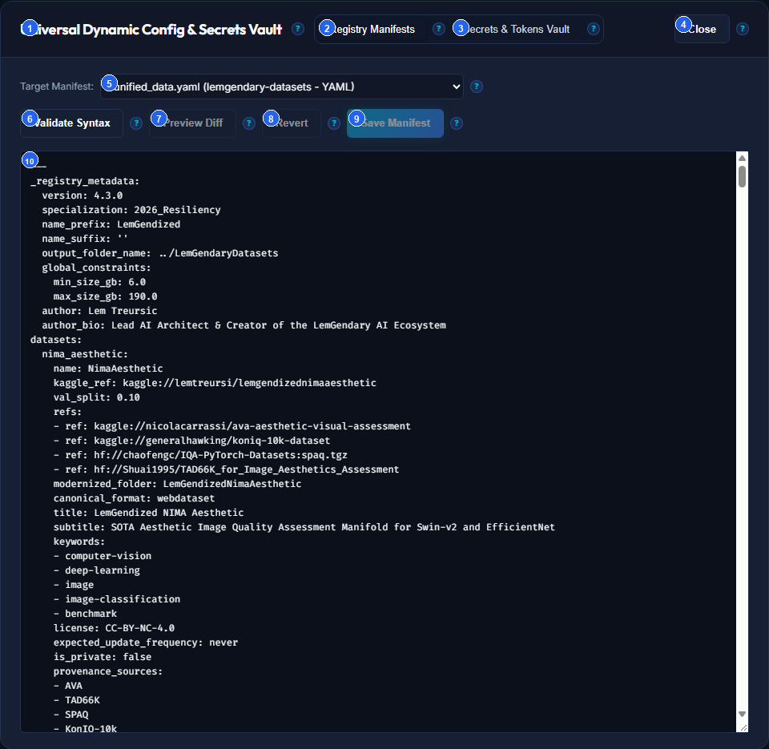
Manifest Registry Editor Numbered Reference
- Configuration Editor Modal Title: Header identifying the central
configuration and manifest governance workspace.
- Registry Manifests Subtab Switcher: Selects the central YAML
configuration and registry manifest editing workspace.
- Secrets & Tokens Vault Subtab Switcher: Switches the modal to credential
and API token management.
- Target Manifest Selector Dropdown (
manifest-select): Selects one of the
ecosystem manifests reported by the Environment Manager, for example
unified_data.yaml (dataset definitions), unified_models_v2.yaml
(architecture registry) and unified_requirements.yaml (dependency SSOT).
- Validate Syntax Button: Sends the current text to the Environment Manager
for YAML or JSON parsing without writing to disk and reports structural
errors.
- Preview Diff Button: Shows your pending edits against the version saved
on disk.
- Revert Button: Discards unsaved edits and restores the content stored on
disk.
- Save Manifest Button: Writes the file atomically after creating an
automatic
.bak snapshot.
- Monospace Manifest Text Editor: A plain text area for direct inspection
and editing of the configuration file.
- Modal Close Button: Safely dismisses configuration modal and returns to
previous workspace view.
Callout bindings (control type; endpoint or action):
- 1. Modal Title (Modal Heading; None): Identifies configuration workspace
and active target file.
- 2. Manifests Tab (Subtab Button;
setActiveTab("manifests")): Activates
central YAML code editor and schema linter.
- 3. Secrets Tab (Subtab Button;
setActiveTab("secrets")): Activates
credentials and token management profiles.
- 4. Manifest Dropdown (Select Dropdown;
GET /api/manifests/read): Loads
the selected file into the editor.
- 5. Validate Syntax (Action Button;
POST /api/manifests/validate):
Validates YAML syntax and schema without altering files on disk.
- 6. Preview Diff (Action Button; None): Compares edits with the saved file.
- 7. Revert (Action Button; None): Restores the saved content.
- 8. Save Manifest (Primary Button;
POST /api/manifests/save): Writes
atomically after a .bak snapshot.
- 9. Monospace Editor (Textarea Editor;
setCurrentContent(e.target.value)): Displays raw configuration text with
monospaced indentation.
- 10. Modal Close (Action Button; None): Closes the dialog without saving
unsaved text.
3.2 Write-Only Secrets & Cloud Tokens
Secrets are write-only from the GUI. The Environment Manager never sends a
stored value back: GET /api/secrets returns for each credential only whether
it is set (has_value) and its last 4 characters (value_hint). Each
credential therefore shows set (••••1234), set or not set, and there is no
Show/Hide toggle.
- Replace a value: Type the new value in the credential's password field
(
replace-secret-{secret_id}) and save.
- Keep a value: Leave the password field blank; saving keeps the stored
value.
- Add a credential: Use "+ Add New Secret", fill in the service, label,
username and secret, then save.
- After saving: The masked list is reloaded, so the values you typed leave
memory. Save errors show the server's message (for example a failed Kaggle
check), and legacy credential files that were skipped or failed are listed.
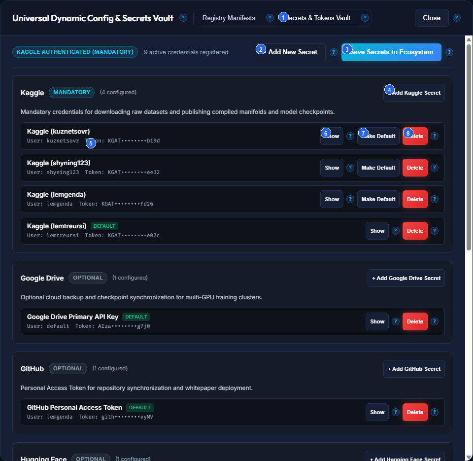
Secrets & Tokens Vault Numbered Reference
- Configuration Editor Modal Title: Header confirming active credentials
and token management workspace.
- Active Cloud Service Profile Badge: Visual badge identifying service
provider (e.g.
Kaggle, Google Drive, GitHub, MetaTrader 5).
- Requirement Level Badge: Clearly flags mandatory vs optional platform
dependencies (
MANDATORY for Kaggle API access, OPTIONAL for secondary
mirrors).
- Toggle Add New Secret Form Button: Expands interactive credential
registration form to add additional service accounts.
- Save Secrets to Ecosystem Button: Sends new and replaced values to the
Environment Manager (
POST /api/secrets), which stores them in
.secrets.yaml and propagates the legacy single-token files
(.kaggle_token, .kaggle_users, .mt5_credentials). Blank fields keep the
stored values.
- New Secret Service Type Dropdown: Selects target cloud platform for new
credential entry.
- Secret Label / Description Input: Human-readable label for credential
identification (e.g.
Personal Primary Account).
- Account Username / Identifier Input: Cloud service username or account
identifier.
- Secret Token / API Key / Password Field (
new-secret-input): A password
field; the value is sent on save and never shown again.
- Add Secret Submit Button: Adds the credential to the list; it is stored
only when you save.
Callout bindings (control type; endpoint or action):
- 1. Modal Title (Modal Heading; None): Identifies secrets management
dialog.
- 2. Service Badge (Status Pill; None): Displays service profile identity.
- 3. Requirement Level (Badge Indicator; None): Differentiates mandatory
core services from optional cloud mirrors.
- 4. + Add New Secret (Action Button;
setIsAddingSecret(!isAddingSecret)):
Toggles new credential registration form with service dropdown.
- 5. Save Secrets (Primary Button;
POST /api/secrets): Stores new values;
blank fields keep stored ones.
- 6. Service Type (Select Dropdown;
setNewService(e.target.value)):
Selects target cloud platform: Kaggle, Google Drive, GitHub, MT5.
- 7. Secret Label (Text Input;
setNewLabel(e.target.value)): Descriptive
tag for account differentiation.
- 8. Account Username (Text Input;
setNewUsername(e.target.value)):
Service login or API user identifier.
- 9. Secret Token (Password Input; None until save): Write-only; never read
back.
- 10. Add Secret Submit (Primary Button; None until save): Adds the
credential to the list.
3.3 Tests & Diagnostics
The "Tests & Diagnostics" header button (header-btn-test-modal) opens the Test
& Diagnostic Orchestrator. Pick a tab, then click its run button; results appear
in the output console (test-modal-output-console). Escape or the X button
closes the dialog.
- Fleet 1-Epoch Smoke Test (
test-modal-btn-run-fleet): Queues a 1-epoch
pass over all 23 registered models on the LemGendary Model Training Suite
(POST /api/training/unit-test-all). The console shows QUEUED and the job
id; follow progress in the training telemetry console.
- Training Suite Unit Tests (
test-modal-btn-run-training-unit): Runs the
unit tests in lemgendary-training-suite/tests/unit/ in-process
(POST /api/training/unit-test-run) and prints the summary.
- Dataset Compiler Tests (
test-modal-btn-run-dataset-unit): Runs the
tests in lemgendary-datasets/tests/ in-process (POST /api/llm/test-suite)
and prints the summary.
The dialog finds both sidecars through the shared service configuration, so it
works with the addresses set by the VITE_*_URL variables. A sidecar that is
offline produces an error message in the console instead of a crash.
4. One-Click Environment Setup: The 7-Stage Clean Install Pipeline
Before training an AI model, your computer must have the correct software
libraries installed. Traditionally, this required typing dozens of cryptic
terminal commands. The AI Studio eliminates this completely through the
automated 7-Stage Clean Install Pipeline.
4.1 Pipeline Orchestrator Control Card
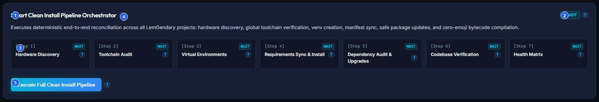
Clean Install Pipeline Numbered Reference
- Pipeline Orchestrator Title & Help Glyph: Header detailing deterministic
7-step environment recreation and toolchain verification.
- Run Pipeline Button (
dash-btn-run-pipeline): Runs all seven steps in
the background without deleting anything (clean: false). Existing virtual
environments and node_modules folders are kept and repaired where needed.
The button is disabled while the Environment Manager is offline.
- Clean Install... Button (
pipeline-btn-clean-install): Opens a
confirmation dialog before the destructive run (see below).
- Active Stage Progress Bar: Shows pipeline progress from step 1 through
step 7.
- Pipeline Execution State Badge: Shows
READY when idle or
PIPELINE ACTIVE while running.
Callout bindings (control type; endpoint or action):
- 1. Pipeline Title (Section Heading; None): Contextual heading explaining
zero-command environment setup.
- 2. Run Pipeline (Primary Button;
POST /api/pipeline/run):
Non-destructive run (clean: false).
- 3. Clean Install... (Danger Button; Opens the dialog): Nothing is deleted
until you confirm.
- 4. Progress Bar (Visual Meter; Log WebSocket updates): Shows progress
across all steps.
- 5. State Badge (Status Badge;
GET /api/pipeline/status): Shows whether
the pipeline is running.
Clean Install Confirmation
A clean install deletes and rebuilds environments, so it always asks first. The
dialog (pipeline-dialog-clean-install) lists what will be deleted across all
workspace projects:
- The
.venv virtual environment of every managed Python project (recreated
from the manifests).
- The
node_modules folder of every Node project (reinstalled with npm).
- Every process running from those virtual environments, including running
sidecars (stopped first).
Focus starts on Cancel (pipeline-btn-clean-cancel); Cancel or Escape
closes the dialog without sending anything. Only Delete and reinstall
(pipeline-btn-clean-confirm) starts the run with clean: true. The run can
take a long time and cannot be undone.
Real-Time Telemetry Progress Tracker & Installation Safeguards
During Step 4 requirements and package synchronization, dependency installations
can take several minutes to resolve and compile binary wheels. To provide
continuous visual feedback and guarantee operators know the pipeline is actively
working rather than stuck, an animated progress tracker
(TelemetryProgressTracker) mounts directly above the monospace telemetry
stream:
- Amber Pipeline Theme: Highlights active pipeline operations with
high-contrast amber styling (
var(--accent-amber, #ffd166)) and a glowing
gradient progress bar
(linear-gradient(90deg, #f59e0b 0%, #ffd166 60%, #00f0ff 100%)).
- Real-Time Requirement Counts: Live progress ratio metrics (e.g.
[12/28 requirements]) show precisely how many dependencies have been
processed.
- Wheel Download Metrics & ETA: Displays active package names, download
transfer speeds (e.g.
14.2 MB/s), byte ratios, and estimated time remaining.
- Indeterminate In-Flight Indicators: When dependencies are resolving or
building wheels, the progress bar displays an animated in-flight pulse,
assuring operators of active execution.
- Card-Level Progress Indicators: Each running step card in the 7-stage grid
displays an animated progress bar along its bottom edge while executing.
4.2 Individual Pipeline Step Execution Cards
In addition to running the full automated sequence, operators can execute
individual stages in isolation for granular troubleshooting, inspection, and
rapid re-verification:
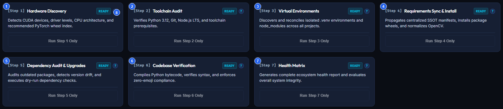
Pipeline Step Execution Cards Numbered Reference
- Stage 1 Card Title (Hardware Discovery): Probes host platform, CPU
architecture, system RAM, NVIDIA driver levels, CUDA compute capabilities,
cuDNN, and TensorRT availability.
- Stage 1 Run Step Action Button: Dispatches isolated execution of Step 1
(
POST /api/pipeline/run-step, step 1, clean: false), refreshing system
hardware telemetry without touching virtual environments.
- Stage 2 Card Title (Toolchain Audit): Validates host toolchain
requirements (Python 3.12+, Git SCM, Node.js, and npm).
- Stage 2 Run Step Action Button: Dispatches isolated execution of Step 2
(
POST /api/pipeline/run-step, step 2, clean: false), verifying host
prerequisites against ecosystem requirements.
- Stage 3 Card Title (Virtual Environments): Audits and safely provisions
isolated Python virtual environments (
.venv) across all managed
repositories.
- Stage 3 Run Step Action Button: Dispatches isolated execution of Step 3
(
POST /api/pipeline/run-step, step 3, clean: false), recreating missing
or corrupted .venv folders idempotently.
- Stage 4 Card Title (Requirements Sync & Install): Propagates centralized
dependencies from
unified_requirements.yaml, installs binary wheels, and
normalizes OpenCV.
- Stage 4 Run Step Action Button: Dispatches isolated execution of Step 4
(
POST /api/pipeline/run-step, step 4, clean: false), synchronizing
packages and installing missing dependencies.
- Stage 5 Card Title (Dependency Audit & Upgrades): Audits outdated
packages, detects version drift, and applies safe non-breaking upgrades
across workspaces.
- Stage 5 Run Step Action Button: Dispatches isolated execution of Step 5
(
POST /api/pipeline/run-step, step 5, clean: false), validating package
upgrade paths without touching live installations.
- Stage 6 Card Title (Codebase Verification): Compiles Python bytecode
across all repositories, verifies AST syntax, and enforces zero-emoji
compliance.
- Stage 6 Run Step Action Button: Dispatches isolated execution of Step 6
(
POST /api/pipeline/run-step, step 6, clean: false), running bytecode
compilation and linting verification gates.
- Stage 7 Card Title (Health Matrix): Generates complete ecosystem health
report, evaluates cross-project drift, and certifies overall system
integrity.
- Stage 7 Run Step Action Button: Dispatches isolated execution of Step 7
(
POST /api/pipeline/run-step, step 7, clean: false), executing full
ecosystem certification and emitting consolidated health metrics.
Callout bindings (control type; endpoint or action):
- 1. Stage 1 Title (Card Heading; None): Identifies hardware and compute
acceleration discovery stage.
- 2. Stage 1 Run Step (Action Button;
run-step 1): Runs hardware probe in
background worker thread.
- 3. Stage 2 Title (Card Heading; None): Identifies toolchain prerequisite
verification stage.
- 4. Stage 2 Run Step (Action Button;
run-step 2): Runs toolchain
prerequisites audit.
- 5. Stage 3 Title (Card Heading; None): Identifies virtual environments
provisioning stage.
- 6. Stage 3 Run Step (Action Button;
run-step 3): Recreates and verifies
project .venv structures.
- 7. Stage 4 Title (Card Heading; None): Identifies requirements
synchronization and wheel install stage.
- 8. Stage 4 Run Step (Action Button;
run-step 4): Installs verified
dependencies from unified manifests.
- 9. Stage 5 Title (Card Heading; None): Identifies dependency audit and
upgrade analysis stage.
- 10. Stage 5 Run Step (Action Button;
run-step 5): Executes dry-run
dependency checks across workspaces.
- 11. Stage 6 Title (Card Heading; None): Identifies bytecode compilation
and syntax verification stage.
- 12. Stage 6 Run Step (Action Button;
run-step 6): Verifies syntax
compilation and enforces zero-emoji compliance.
- 13. Stage 7 Title (Card Heading; None): Identifies system health matrix
certification stage.
- 14. Stage 7 Run Step (Action Button;
run-step 7): Generates complete
ecosystem health report and certifies status.
4.3 Hardware Acceleration Sentinel Card
The Hardware Acceleration Sentinel Card is permanently visible on the central
Dashboard, delivering an un-truncated live readout of physical compute
capabilities:
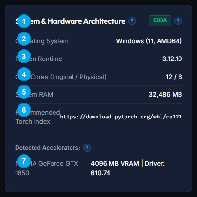
Hardware Architecture Card Numbered Reference
- Primary Accelerator Backend Badge & Header: Highlights active execution
engine (
CUDA, DIRECTML, ROCM, or CPU) alongside the
System & Hardware Architecture section header and contextual probe guidance
tooltip.
- Host Operating System Row: Confirms operating system release and kernel
architecture (
Windows (11, AMD64)).
- Python Runtime Row: Displays active Python interpreter revision
(
3.12.10), verifying compliance with the 3.12+ ecosystem baseline.
- CPU Cores Allocation Row: Reports available host processor allocation
across logical threads and physical compute cores (
12 / 6).
- System RAM Capacity Row: Displays physical host RAM capacity
(
32,486 MB) available for data streaming and dataset decompression.
- Recommended PyTorch Wheel Index Row: Authoritative repository link for
CUDA 12.1 binary packages (
https://download.pytorch.org/whl/cu121).
- Detected Accelerators & Dedicated VRAM Row: Details physical GPU device
model (
NVIDIA GeForce GTX 1650), installed driver level (610.74), and
dedicated video memory capacity (4096 MB VRAM).
Callout bindings (control type; endpoint or action):
- 1. Accelerator Badge & Header (Status Pill & Header;
env_manager.system_probe): Displays primary execution backend and sentinel
header.
- 2. Operating System (Metric Row;
platform.platform()): Confirms
operating system version and kernel architecture.
- 3. Python Runtime (Metric Row;
sys.version): Verifies Python 3.12+
interpreter compliance.
- 4. CPU Cores (Logical / Physical) (Metric Row;
os.cpu_count() /
psutil): Reports available logical threads and physical cores.
- 5. System RAM (Metric Row;
psutil.virtual_memory()): Displays host
memory capacity for batch streaming.
- 6. Recommended Torch Index (Metric Row;
env_manager.system_probe):
Official PyTorch binary wheel repository URL.
- 7. Detected Accelerators & VRAM (Device Metric Row; NVML / CUDA probe):
Details physical GPU model, driver level, and dedicated VRAM.
4.4 Managed Workspace Projects Health Cards
The Project Environments overview on the Dashboard displays dedicated cards for
each sub-project in the ecosystem. All cards display clean relative paths
without exposing sensitive host absolute paths:
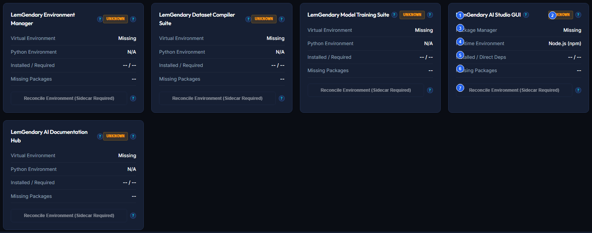
Managed Projects Grid Numbered Reference
- Managed Workspace Project Title: Card identifying the managed project
with canonical uniform naming (e.g.
1. LemGendary Environment Manager,
2. LemGendary Dataset Compiler Suite, 3. LemGendary Model Training Suite,
4. LemGendary AI Studio GUI, 5. LemGendary AI Documentation Hub).
- Project Health Badge: Displays green
HEALTHY when virtual environment
and installed packages match manifest specifications.
- Installed Packages & Status Metric Row: Displays total installed library
count and environment synchronization status.
- Reconcile Virtual Environment Button: Triggers single-project dependency
alignment to restore missing wheels and reconcile version drift.
Callout bindings (control type; endpoint or action):
- 1. Project Title (Card Heading; None): Canonical uniform project title;
relative path shown.
- 2. Health Badge (Status Badge;
GET /api/health): Shows isolated .venv
validity and manifest conformance.
- 3. Packages Metric (Metric Row;
pip list / manifest scan): Displays
total installed package count and synchronization status.
- 4. Reconcile Button (Action Button;
POST /api/pipeline/reconcile?project={name}): Recreates .venv and
reconciles missing wheels for selected project.
5. Dataset Compilation: Modernization, Kaggle Ingestion & Streaming Manifolds
High-velocity deep learning requires converting raw, loose image files into
modern streaming containers. Traditional loose-image folders cause OS filesystem
freezes when training models on hundreds of thousands of images. The LemGendary
Dataset Compiler Suite tab provides a complete visual control center for dataset
synthesis, direct cloud ingestion, and bidirectional Kaggle synchronization.
5.1 Dataset Compiler & Modernization Control Card
The top card of the Dataset Compiler tab governs manifold synthesis and
streaming storage conversion:
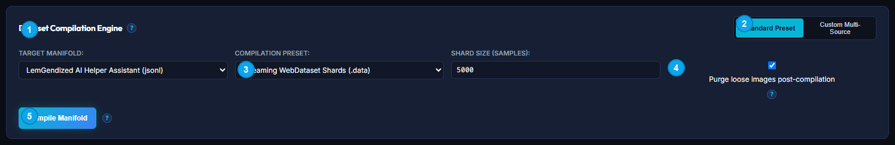
Dataset Compiler Control Card Numbered Reference
- Dataset Compilation Engine Title & Help Glyph: Header detailing container
synthesis alongside the contextual guidance tooltip (
?).
- Standard Preset Mode Toggle Button: Switches to standard preset mode
compiling pre-configured datasets registered in
unified_data.yaml.
- Custom Multi-Source Mode Toggle Button: Switches to custom multi-source
mode, enabling custom dataset naming, multi-directory aggregation, and format
selection.
- Target Manifold Dropdown Selector: Selects source manifold to compile
from registered definitions in
unified_data.yaml.
- Compilation Preset Dropdown Selector (
preset-select): Lists the
presets from the sidecar's presets.yaml (GET /api/gui/presets) plus
"Server default", which lets the sidecar apply its default preset. While the
sidecar is offline only "Server default" is shown.
- Compile Manifold Primary Action Button (
comp-btn-compile): Starts a
compile job (POST /api/gui/quick-compile with model and preset) and
shows the returned job id. An unknown preset shows the server's message with
the valid names.
Shard size and loose-image purging are not part of the standard form; the
preset defines them. The custom multi-source form keeps both fields.
Callout bindings (control type; endpoint or action):
- 1. Title & Help Glyph (Section Heading; None): Contextual heading
explaining streaming container compilation.
- 2. Standard Preset Button (Mode Button;
onChangeCompileMode("standard")): Sets compilation form to standard manifest
preset workflow.
- 3. Custom Multi-Source Button (Mode Button;
onChangeCompileMode("custom")): Reveals custom source aggregation and format
customization fields.
- 4. Target Manifold (Select Dropdown;
onSelectManifold(e.target.value)):
Chooses dataset registered in unified_data.yaml.
- 5. Compilation Preset (Select Dropdown;
GET /api/gui/presets): Server
presets plus "Server default".
- 6. Compile Manifold (Primary Button;
POST /api/gui/quick-compile):
Starts the compile job and shows its id.
5.2 Production Manifolds Catalog, Upstream Lineage & One-Click Cloud Sync
The Production Manifolds section catalogs all verified streaming datasets inside
./LemGendaryDatasets/, providing instant access to upstream lineage and
integrated card-level Kaggle synchronization:
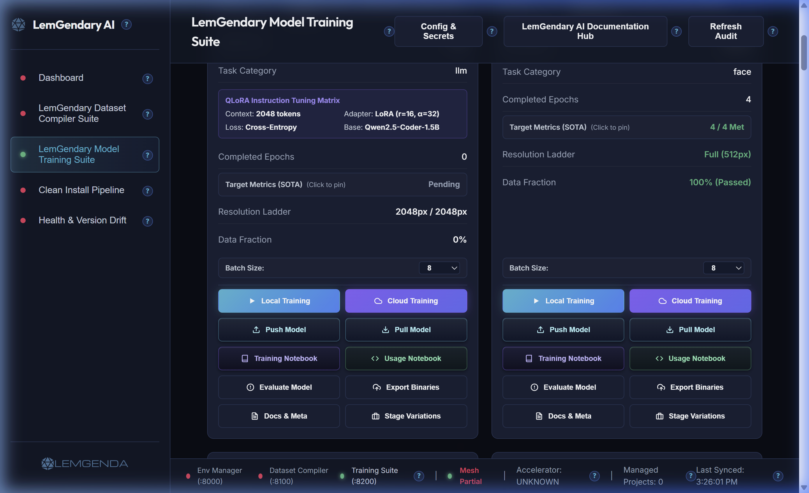
Production Manifolds Catalog Numbered Reference
- Production Manifolds Section Header & Total Counter: Displays hub section
title alongside active and total verified dataset count
(
Dataset Compiler & Manifold Hub (21 / 21)).
- Sub-Tab Navigation Switcher Buttons: Three-way tab switcher selecting
between
Manifolds Catalog, Modernization Queue, and Scale Reduction
views.
- Global Header Action Buttons:
Update All Kaggle Metadata: Synchronizes descriptors across all
registered datasets in Kaggle Cloud (POST /api/kaggle/update-metadata
with all_datasets: true).Regen Index: Rescans ./LemGendaryDatasets/ on disk and regenerates
unified_data.yaml index.Refresh Catalog: Polls port 8100 sidecar to detect local disk changes and
remote cloud sync status.
- Live Search Input & Multi-Dimension Filter Dropdowns: Real-time manifold
name search paired with
Status (All, Compiled, Uncompiled), Format (All,
WebDataset, Parquet, MDS), and Task (All, Restoration, Detection,
Classification, Segmentation, Forex) dropdowns.
- Verified Manifold Card Identity & Status Badge: Displays canonical
dataset display name, green
COMPILED status pill, storage format, sample
count, and disk footprint.
- Upstream Sources & Lineage Popover Button: Interactive popover trigger
revealing raw source dataset provenance, sample contributions, licensing, and
raw data lineage.
- Manifold Card Action Buttons Group:
Update Metadata (Button): Dispatches POST /api/kaggle/update-metadata
for the single selected manifold.Audit Notebooks (Link): Direct external link opening Kaggle Registry
Metadata Training audit notebook.Download (Button): Pulls remote streaming shards from Kaggle Cloud
Storage with hash validation (POST /api/kaggle/download).Upload (Button): Packages and uploads local compiled shards directly to
Kaggle Cloud Datasets (POST /api/kaggle/upload).
Callout bindings (control type; endpoint or action):
- 1. Hub Header & Count (Section Heading; None): Labels verified manifold
inventory and total dataset count.
- 2. Sub-Tabs Switcher (Tab Buttons;
onTabChange()): Toggles catalog,
transcode modernization queue, and scale reduction.
- 3. Global Header Actions (Action Buttons;
POST /api/kaggle/...): Batch
metadata update, index regeneration, and catalog refresh.
- 4. Search & Filter Dropdowns (Input & Selects; Client-side filter):
Filters manifolds by search query, compilation status, format, and task.
- 5. Manifold Identity & Status (Card Header; Sourced from
unified_data.yaml): Displays verified samples, disk storage footprint,
format, and shards.
- 6. Upstream Sources Popover (Popover Trigger;
HoverPinPopover.tsx):
Displays upstream provenance, licensing, and raw data lineage.
- 7. Card Action Buttons (Button Group;
POST /api/kaggle/...):
Single-dataset metadata update, audit link, cloud download, and shard upload.
5.3 Modernization Queue & Scale Reduction Workflows
The additional sub-tabs in the Production Manifolds section provide advanced
dataset operations:
- Modernization Queue & Transcode Tab: Detects datasets containing legacy
PNG/JPEG images that need transcoding to modern WebP format. Operators can
adjust the parallel worker thread pool count (1 to 16, default 8), run a
simulated dry run, or batch transcode all datasets with optional automated
push to Kaggle.
- Scale Reduction (Downsample) Tab: Derives spatially downscaled and
sample-reduced dataset variants for rapid experimentation (
10% Preview,
25% Fast Test, 50% Balanced, 75% High Res) using Lanczos-3 spatial
downsampling.
5.4 Embedded Dataset Telemetry Console
The Dataset Compiler panel features a dedicated live streaming telemetry console
docked directly at the bottom of the viewport. Integrated with the modern
@radix-ui/react-progress engine (installed and governed via LemGendary
Environment Manager), active operations feature an accessible, glowing two-line
progress architecture:
- Line 1 (Unconstrained Operational Metrics): Displays operation title,
target dataset archive, exact percentage, transfer size / file counts,
real-time bandwidth transfer rate, and dynamic ETA cleanly spaced without
text clipping or truncation.
- Line 2 (Visual Progress Bar Only): Full-width hardware-accelerated
glowing progress indicator strictly isolating the visual progress bar on its
own dedicated line.
- In-Place Stream De-duplication: Intermediate progress updates for
in-flight archiving, extraction, and cloud synchronization are rolled up
in-place, eliminating scrolling clutter while preserving discrete step start,
verification, and completion records.
6. Model Training Pipeline: Architectures, Ladders & Sawtooth Governor
Once your dataset is compiled, you are ready to train a production-grade neural
network. The LemGendary Model Training Suite (.\lemgendary-training-suite\)
provides dynamic hyperparameter management and nuclear memory safeguards.
The top toolbar of the Model Training panel provides search, domain filtering
and batch actions across all 23 registered models. The fleet-wide 1-epoch smoke
test moved to the Test & Diagnostic Orchestrator (section 3.3).
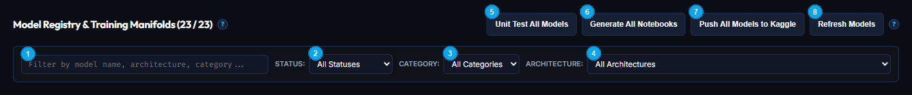
- Model Name Search Input Field: Real-time live search filter narrowing the
architecture catalog by model key, architecture, or category
(
Filter by model name, architecture, category...).
- Status Filter Dropdown: Dropdown selector filtering architectures by
training and weights status (
All Statuses, Fully Trained,
Partially Trained, Weights Ready, Initializing).
- Category Filter Dropdown: Dropdown selector restricting catalog display
to specific ML task domains (
All Categories, enhance, face, forex,
llm, restoration, yolo).
- Architecture Filter Dropdown: Dropdown selector filtering the registry by
specific neural backbone architecture.
- Generate All Notebooks Action Button
(
train-btn-generate-all-notebooks): Batch regenerates the Jupyter
notebooks of all models (POST /api/notebooks/generate-all).
- Push All Models to Kaggle Action Button
(
training-toolbar-push-all-models-btn): Enqueues background fleet
synchronization (POST /api/training/kaggle/push-all) staging isolated
variations, verifying isolation, and publishing all registered models,
checkpoints, and variations to Kaggle Models Hub.
- Refresh Models Action Button (
train-btn-refresh-models): Reloads the
models with their latest metrics from the LemGendary Model Training Suite
on port 8200 in one request (GET /api/gui/models/with-stats).
The batch buttons are disabled while the Model Training Suite is offline. When
any filter is active, a Reset Filters button clears them.
Callout bindings (control type; endpoint or action):
- 1. Model Search Filter (Text Input; Client-side filter): Filters
architecture catalog in real time by name, architecture, or category.
- 2. Status Filter (Select Dropdown; Client-side filter): Restricts catalog
display by training lifecycle and weights state.
- 3. Category Filter (Select Dropdown; Client-side filter): Restricts
catalog display to specific ML task domains.
- 4. Architecture Filter (Select Dropdown; Client-side filter): Restricts
catalog display to specific neural backbone architecture.
- 5. Generate All Notebooks (Secondary Button;
POST /api/notebooks/generate-all): Batch regenerates the notebooks of all
models.
- 6. Push All Models to Kaggle (Secondary Button;
POST /api/training/kaggle/push-all): Stages isolated variations and
publishes all registered models to Kaggle Models Hub.
- 7. Refresh Models (Secondary Button;
GET /api/gui/models/with-stats):
Reloads weights status, metrics and ladder completion.
Note: The toolbar screenshot above predates this release and still shows the
removed "Unit Test All Models" button.
6.2 Registered Architectures & Checkpoint Telemetry Grid
Each registered model card provides comprehensive telemetry, binary export
readiness, and interactive SOTA target inspection:
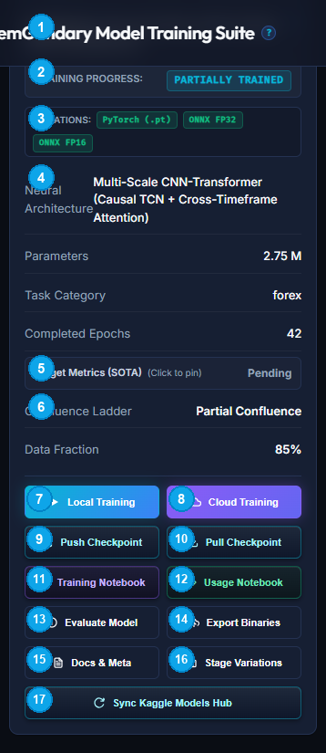
Architecture Telemetry Card Numbered Reference
- Model Identity, Help Glyph & Target Pin: Displays canonical model title
(
LemGendary Forex Predictor), contextual help tooltip (?), and target
pinning toggle button.
- Training Progress & Checkpoint State Pill: Displays the training
status the LemGendary Model Training Suite reports (
training_status):
FULLY TRAINED, PARTIALLY TRAINED, WEIGHTS READY, INITIALIZING, or
UNKNOWN with the reason (stats_error) when the sidecar could not read the
model's stats; metrics are hidden for UNKNOWN. The GUI does not derive the
status itself.
- Binary Format Variations Badges: Visual indicators confirming compiled
formats ready for inference (
PyTorch (.pt), ONNX FP32, ONNX FP16).
- Neural Architecture Backbone Row: Displays network architecture type
(
Multi-Scale CNN-Transformer (Causal TCN + Cross-Timeframe Attention)).
- Trainable Parameters Metric Row: Displays total parameter allocation
across backbone and attention heads (
2.75 M).
- Task Category Metric Row: Displays registered domain classification
(
forex).
- Completed Epochs Counter Row: Reports cumulative trained epochs recorded
in checkpoint metadata (
42).
- Target Metrics (SOTA) Interactive Popover Trigger: Interactive popover
button (
(Click to pin) Pending or 0 / 3 Met) detailing target convergence
metrics, current best scores, and evaluation baselines.
- Spatial / Confluence / Context Window Progression Row: Displays active
ladder rung (
Resolution Ladder: Full (512px) for vision,
Confluence Ladder: Partial Confluence for forex, or
Context Window: 2048 tokens (Full) for causal LLM architectures).
- Dataset Scaling Fraction / Walk-Forward Fold / Training Corpus Row:
Displays active training dataset sampling fraction (
Data Fraction: 100%)
for vision models, dynamic Walk-Forward fold progression
(Walk-Forward Fold: Fold 1 / 6 (2019-2020 -> 2021)) for quantitative
financial models, or instruction dataset manifold
(Training Dataset: LemGendizedAIHelperLemGend) for causal LLM assistants.
- Batch Size Selector: Dropdown selector configuring mini-batch dimension
(8, 16, 32, 64, 128, 256, 512, 1024) optimized for available GPU VRAM
headroom (
Batch Size: 256).
- Local Training Action Button: Dispatches local training loop
(
POST /api/gui/quick-train) and focuses the live telemetry stream below.
When training is active, transforms into Stop Training abort trigger.
- Cloud Training Action Button: Opens the interactive Cloud & Registry
Dispatch dialog to deploy workloads to Kaggle GPU clusters.
- Push Model Action Button: Stages isolated variations and publishes the
model (PyTorch default/fp32, ONNX fp16/fp32) and YAML metadata to Kaggle
Models Hub (
POST /api/training/kaggle/push). Automatically enriches model
metadata with the official architecture whitepaper citation on GitHub Pages
and file descriptions across all 4 variations. Runs in an isolated
background thread without clobbering active local GPU training sessions.
- Pull Model Action Button: Downloads all 4 canonical model variations
from Kaggle Models Hub into local
LemGendaryModels/
(POST /api/training/kaggle/pull).
- Training Notebook Action Button: Regenerates self-contained Jupyter
training notebooks for Colab and Kaggle environments
(
POST /api/notebooks/generate).
- Usage Notebook Action Button: Builds standalone usage guide and
inference walkthrough notebooks (
POST /api/notebooks/usage).
- Evaluate Model Action Button: Dispatches validation benchmark
(
POST /api/training/evaluate) across test splits.
- Export Binaries Action Button: Compiles checkpoint into deployment
binaries (
.onnx FP32/FP16 and TorchScript) via
POST /api/training/export.
- Docs & Meta Action Button: Regenerates Markdown Model Card (
README.md)
and Kaggle model_metadata.yaml / model-metadata.json
(POST /api/training/generate-docs). Populates the Citations & Technical
Documentation section with live links to the GitHub Pages whitepaper,
academic literature references, and complete variation file manifests.
- Stage Variations Action Button: Stages isolated format variations into
dedicated subdirectories under
dist/kaggle/ (POST /api/training/stage).
Callout bindings (control type; endpoint or action):
- 1. Model Identity & Pin (Card Header;
onToggleTargetPin()): Labels
architecture name, tooltip help, and pins active model target.
- 2. Training Progress (Status Pill; Multi-pillar verification): Labels
verified training completion and checkpoint readiness.
- 3. Format Variations (Status Badges; On-disk binary scan): Confirms
PyTorch, ONNX FP32, and ONNX FP16 artifact readiness.
- 4. Neural Architecture (Metric Row; Architecture SSOT): Details network
topology and layer configuration.
- 5. Parameters (Metric Row; Architecture SSOT): Reports total trainable
parameter count (
parameters_m from the training registry); N/A when the
registry has no count.
- 6. Task Category (Metric Row; Architecture SSOT): Identifies ML problem
domain classification.
- 7. Completed Epochs (Metric Row; Checkpoint telemetry): Displays verified
training iterations completed.
- 8. Target Metrics (SOTA) (Popover Trigger;
HoverPinPopover.tsx): Details
convergence targets, current best scores, and baselines.
- 9. Spatial / Confluence / Context Ladder (Progress Metric; Checkpoint
telemetry): Displays active spatial ladder rung (vision), timeframe confluence
(forex), or context window token limit (LLM).
- 10. Data Fraction / Walk-Forward Fold / Corpus (Progress Metric;
Checkpoint telemetry): Reports active dataset sampling percentage (vision),
Walk-Forward fold status (forex), or instruction manifold name (LLM).
- 11. Batch Size Selector (Dropdown Select; Local State): Selects mini-batch
dimension (8 to 1024) matched to GPU VRAM capacity.
- 12. Local Training (Primary Button;
POST /api/gui/quick-train): Starts
local GPU training pass and focuses telemetry terminal below.
- 13. Cloud Training (Action Button;
onOpenCloudModal()): Opens Cloud
Training dialog for Kaggle/Colab GPU cluster dispatch.
- 14. Push Model (Action Button;
POST /api/training/kaggle/push): Stages
and publishes all variations and metadata (with whitepaper citations) to
Kaggle Models in background.
- 15. Pull Model (Action Button;
POST /api/training/kaggle/pull):
Downloads canonical variations from Kaggle into local model directory.
- 16. Training Notebook (Action Button;
POST /api/notebooks/generate):
Generates self-contained training notebooks for Kaggle and Colab.
- 17. Usage Notebook (Action Button;
POST /api/notebooks/usage): Builds
standalone usage guide and inference notebooks.
- 18. Evaluate Model (Action Button;
POST /api/training/evaluate):
Executes validation benchmark and streams evaluation metrics.
- 19. Export Binaries (Action Button;
POST /api/training/export): Compiles
checkpoint into ONNX FP32, FP16, and TorchScript formats.
- 20. Docs & Meta (Action Button;
POST /api/training/generate-docs):
Regenerates README.md and model_metadata.yaml with citations and file
manifests.
- 21. Stage Variations (Action Button;
POST /api/training/stage): Stages
binaries into isolated Kaggle variation subdirectories.
6.2.1 Domain-Specific Neural Architecture Model Cards
To provide precise guidance across distinct ML task categories, the AI Studio
GUI renders domain-tailored card rows dynamically:
1. Quantitative Finance (Forex) Card
- Confluence Ladder: Displays multi-timeframe consensus progression
(
Partial Confluence or Full Confluence (D1) across M1, M5, M15, H1, H4,
D1).
- Walk-Forward Fold: Tracks financial validation cross-folds
(
Fold 1 / 6 (2019-2020 -> 2021)) rather than traditional data sampling
fractions.
- SOTA Convergence: Evaluates multi-objective targets including Directional
Accuracy (%), Profit Factor, Sharpe Ratio, Sortino Ratio, and Drawdown.
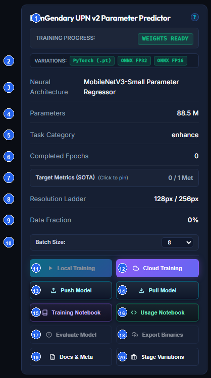
- Resolution Ladder: Visualizes spatial rung stepping
(
Stage 1: 256px / 512px or Full (512px)).
- Data Fraction: Tracks data scale ramp-up (
100% (Passed) or staged
percentages).
- Convergence Baselines: Tracks PSNR (dB) and SSIM restoration fidelity
baselines.
3. Object Detection & Spatial Perception Card (YOLOv8n Multi-Task)
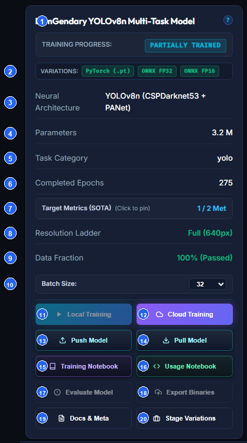
- Input Resolution: Dynamically scales spatial inputs (
640px multi-scale
anchor grids).
- Multi-Task Metrics: Simultaneously monitors box mAP50-95, classification
accuracy, and mask loss.
4. Large Language Model Card (AI Studio Assistant - Causal LLM)
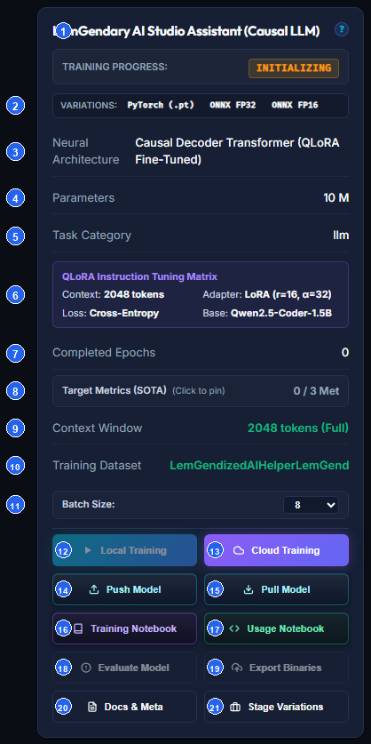
- QLoRA Instruction Tuning Matrix: Dedicated matrix displaying context
tokens (
2048 tokens), adapter rank (LoRA r=16, alpha=32), loss function
(Cross-Entropy), and base weights (Qwen2.5-Coder-1.5B).
- Context Window: Displays active token attention window
(
2048 tokens (Full)).
- Training Dataset: References the domain instruction corpus
(
LemGendizedAIHelperLemGend).
6.2.2 Interactive SOTA Target Pinning & Metric Inspection
Clicking the Target Metrics (SOTA) header on any active card pins the metric
inspection popover in place:
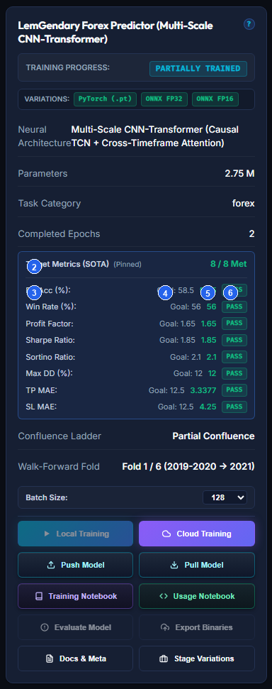
The pinned popover details all convergence parameters, goal thresholds, achieved
validation scores, and real-time pass/fail indicators.
6.3 Three-Tab Real-Time Telemetry Stream & Responsive Cancellation
The redesigned Live Telemetry Console is embedded directly on the Model Training
panel, providing a tabbed terminal interface for complete observability across
local training, remote cloud execution, and ecosystem mesh daemons:
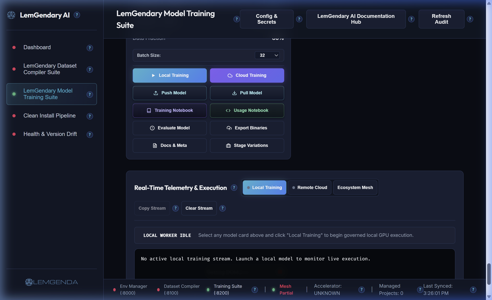
Telemetry Console Numbered Reference
- Local Training Telemetry Subtab: Focuses the local training worker log
stream, displaying minibatch loss, learning rate decay, gradient norms, and
spatial ladder transitions.
- Remote Cloud Telemetry Subtab: Shows events of the attached remote job
and of Kaggle training, Kaggle monitoring and cloud push jobs.
- Ecosystem Mesh Logs Subtab: Focuses cross-daemon JSON-RPC events, HTTP
health probes, and audit logs between Ports 8000, 8100, and 8200.
- Accessible Radix UI Progress Engine: Displays active epoch iterations,
batch counts, transfer bandwidth, and dynamic ETAs using a two-line layout:
Line 1 for unconstrained numerical metrics and Line 2 for the glowing
progress bar indicator. Extended with native tqdm and Ultralytics console
pattern parsing (
elapsed<remaining, e.g., <01:29:22), automatically
stripping leading log timestamp prefixes to maintain clean TRAINING status
classification and real-time remaining countdowns for YOLO and vision
workflows.
- Monospace Terminal Output Stream: High-performance scrolling container
with full ANSI color parsing, in-place update roll-ups, rendering timestamps,
log levels, and milestone records without redundant clutter.
- Stream Action Controls:
Copy Stream: Copies the entire terminal buffer to system clipboard.Clear Stream: Flushes the terminal display without disrupting background
jobs.Halt Local Job Dynamic Action Button: Sends a cancel request
(POST /api/jobs/{job_id}/cancel). The job is cleared only when the
LemGendary Model Training Suite confirms it was cancelled; otherwise an
error banner shows the sidecar's message and the job stays attached. While
a local job runs, the panel also checks its status every 3 seconds and
clears it when it completes, fails or is cancelled.
Callout bindings (control type; endpoint or action):
- 1. Local Training Tab (Subtab Switcher;
setActiveStreamTab("local")):
Streams local GPU worker logs, loss values, and ladder rungs.
- 2. Remote Cloud Tab (Subtab Switcher;
setActiveStreamTab("remote")):
Shows events of the attached remote job and of Kaggle jobs.
- 3. Ecosystem Mesh Tab (Subtab Switcher;
setActiveStreamTab("mesh")):
Streams cross-daemon RPC events and health telemetry.
- 4. Radix UI Progress (Accessible Widget;
@radix-ui/react-progress):
Two-line visual progress bar with unconstrained operational metrics.
- 5. Monospace Terminal (Log Container; Real-time WebSocket buffer):
High-performance terminal container with in-place stream de-duplication.
- 6. Stream Controls (Action Buttons; Buffer sync / Job cancel): Copies log,
clears screen, or issues sub-second training cancellation.
6.4 Revamped Training Dashboard Topology & Interactive SOTA Inspection
The modern Training Panel employs a high-productivity split topology:
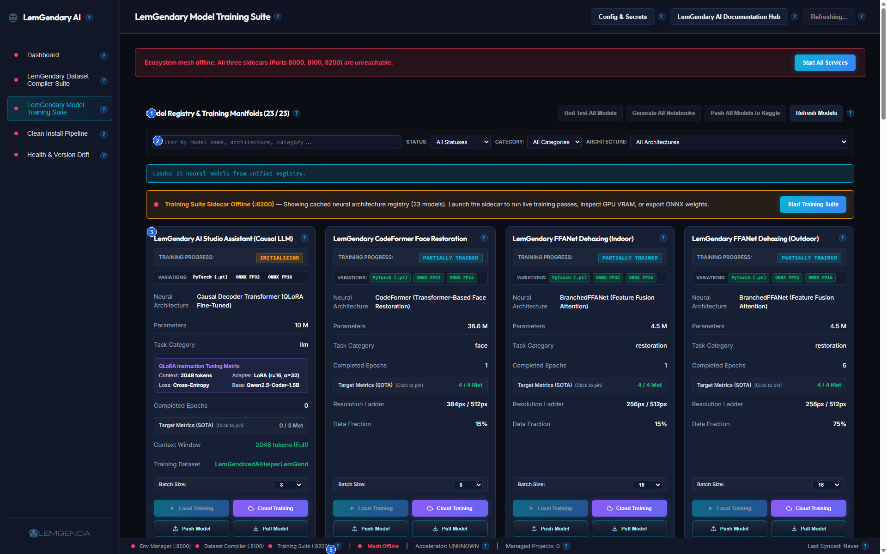
Training Dashboard Topology Numbered Reference
- Global Orchestrator Toolbar: Houses high-level configuration controls,
including real-time search, domain filtering, quick train presets, 1-epoch
fleet diagnostic trigger, and batch notebook generation.
- Interactive Filter & Search Section: Inline filter bar providing
real-time model name search query input, machine learning domain selector
(restoration, detection, classification, segmentation, forex), and spatial
ladder rungs.
- Registered Neural Architecture Cards Grid: Displays the active Model Card
Grid with format variation badges, parameter counts, and inline ladder
progress meters.
- Interactive Pinned/Persisted SOTA Popover: Hovering over SOTA targets
reveals all metrics, targets, and actual best scores; clicking pins the
tooltip open for persistent comparison during training.
- Dual Local vs. Cloud Execution Triggers: Card action buttons provide
"Local Training" (local dispatch) and "Cloud Training" (opens the
interactive Cloud & Registry Dispatch modal). Both triggers automatically
focus the live telemetry stream below.
Callout bindings (control type; endpoint or action):
- 1. Orchestrator Toolbar (Toolbar Container; Client-side filters & batch
triggers): Controls fleet search, domain filtering, and batch automation.
- 2. Filter & Search Section (Input & Select Controls; Client-side filter):
Filters models in real time by name, task domain, and ladder stage.
- 3. Model Cards Grid (Card Grid;
models_v2.json scan): Displays
architecture telemetry, ladder meters, and action buttons.
- 4. Pinned SOTA Popover (Popover Trigger;
HoverPinPopover.tsx): Details
convergence targets, current best scores, and baselines.
- 5. Execution Triggers (Action Buttons; Local training / Cloud dispatch):
Dispatches local GPU execution or opens remote cloud modal.
7. Evaluation, Export & Cloud Publishing to Kaggle and Google Drive
7.1 Real-Time Metrics & Live Loss Curves
During training, the GUI visualizes live training and validation loss curves:
- Training Loss (Blue Line): Decreases as the model memorizes garden
patterns.
- Validation Loss (Green Line): Decreases as the model generalizes to new
photos it has never seen before.
- Perceptual Metrics: PSNR (Peak Signal-to-Noise Ratio), SSIM (Structural
Similarity), and mAP (mean Average Precision) are plotted in real time and
recorded in
metrics.csv.
7.2 Exporting to Universal Runtimes
Once training completes, you can export your trained model with a single click:
- ONNX Export: Generates fixed-shape
.onnx files compatible with DirectML
(Windows laptops), TensorRT (NVIDIA GPUs), OpenVINO (Intel processors), and
web browsers (WebGPU).
- Safetensors Weights: Saves cryptographic, zero-copy weights free of
arbitrary code execution vulnerabilities.
7.3 Publishing to Kaggle Models Hub & Cloud Registry
Clicking Sync Kaggle Models Hub on any registered architecture card opens the
isolated multi-variation publishing workflow:
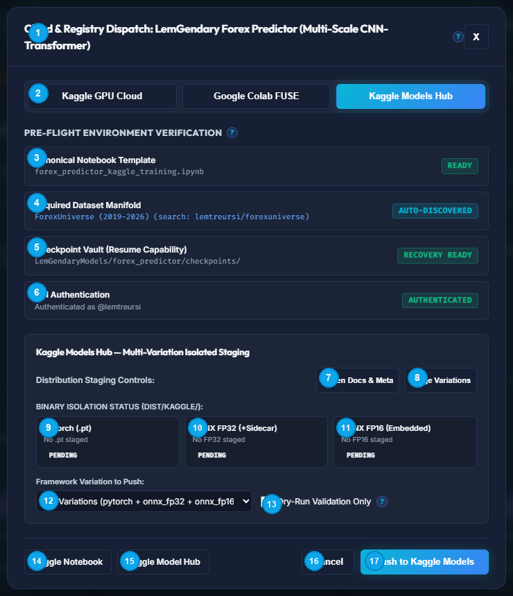
Cloud & Registry Dispatch Numbered Reference
- Modal Header & Model Identity: Displays active model target
(
LemGendary Forex Predictor) alongside contextual guidance tooltip icon.
- Cloud Platform Switcher Buttons: Three-way toggle button group switching
between
Kaggle GPU Cloud, Google Colab FUSE, and Kaggle Models Hub
modes.
- Pre-Flight Canonical Notebook Template Row: Verifies presence and AST
syntax of canonical Kaggle training notebook template.
- Pre-Flight Required Dataset Manifold Row: Confirms dataset manifold
shards are registered in
unified_data.yaml and ready for cloud mounting.
- Pre-Flight Checkpoint Vault Row: Audits remote checkpoint vault status
and validates cryptographic weight hashes.
- Pre-Flight API Authentication Row: Verifies Kaggle API credentials
(
kaggle.json) loaded from the Secrets Vault are active and authenticated.
- Regen Docs & Meta Action Button: Dispatches
POST /api/training/generate-docs, regenerating Markdown Model Card
(README.md) and model-metadata.json.
- Stage Variations Action Button: Dispatches
POST /api/training/stage,
packaging binary artifacts into isolated directory trees under
dist/kaggle/.
- PyTorch (.pt) Variation Card: Displays binary isolation status, file
size, and SHA256 checksum for native PyTorch weights.
- ONNX FP32 Variation Card: Displays binary isolation status and
verification metrics for the full-precision ONNX computational graph.
- ONNX FP16 Variation Card: Displays binary isolation status and
verification metrics for the half-precision ONNX graph.
- Framework Variation Select Dropdown: Selects target payload to publish
(
All Variations, PyTorch (.pt), ONNX FP32, or ONNX FP16).
- Dry-Run Validation Checkbox Toggle: Enables dry-run validation mode to
simulate isolation checks and folder verification without executing live
cloud upload.
- Kaggle Notebook Link Button: External navigation link opening the
canonical remote training workbook on Kaggle.
- Kaggle Models Hub Link Button: External navigation link opening the
official model registry repository on Kaggle Models Hub.
- Cancel Action Button: Dismisses the publishing dialog and returns to the
Training Dashboard without mutating remote state.
- Push to Kaggle Models / Validate Isolation Button: Authenticates and
publishes verified multi-variation release weights to Kaggle Models Hub (or
executes isolation check).
Callout bindings (control type; endpoint or action):
- 1. Modal Header (Dialog Header; None): Confirms model identity and target
publishing parameters.
- 2. Platform Switcher (Button Group;
setTargetPlatform()): Switches
between remote GPU compute dispatch and registry publishing.
- 3. Pre-Flight Notebook Template (Verification Row; Pre-flight checklist
audit): Validates existence and syntax of canonical training notebook.
- 4. Pre-Flight Dataset Manifold (Verification Row; Pre-flight checklist
audit): Confirms dataset manifold registration in
unified_data.yaml.
- 5. Pre-Flight Checkpoint Vault (Verification Row; Pre-flight checklist
audit): Audits remote checkpoint availability and cryptographic hashes.
- 6. Pre-Flight API Authentication (Verification Row; Pre-flight checklist
audit): Verifies Kaggle API credentials loaded from Secrets Vault.
- 7. Regen Docs & Meta (Action Button;
POST /api/training/generate-docs):
Regenerates model card README and Kaggle metadata file.
- 8. Stage Variations (Action Button;
POST /api/training/stage): Stages
isolated variation folders under dist/kaggle/.
- 9. PyTorch Status Card (Status Card; Artifact scan): Displays isolation
readiness of native PyTorch weights.
- 10. ONNX FP32 Status Card (Status Card; Artifact scan): Displays isolation
readiness of 32-bit ONNX graph.
- 11. ONNX FP16 Status Card (Status Card; Artifact scan): Displays isolation
readiness of half-precision ONNX graph.
- 12. Variation Select Dropdown (Select Dropdown;
setSelectedVariation()):
Selects target format variation to stage or publish.
- 13. Dry-Run Validation Toggle (Checkbox Input;
setDryRunOnly()):
Simulates isolation verification without remote cloud publishing.
- 14. Kaggle Notebook Link (External Link; Opens browser URL): Direct link
opening remote Kaggle training notebook.
- 15. Kaggle Models Hub Link (External Link; Opens browser URL): Direct link
opening model repository on Kaggle Models Hub.
- 16. Cancel Action Button (Secondary Button;
onCloseModal()): Closes
dialog cleanly without altering local or remote state.
- 17. Push to Kaggle / Validate (Primary Button;
POST /api/training/kaggle/push): Publishes multi-variation release weights
to Kaggle Models Hub.
Fleet Synchronization Note: In addition to publishing individual model
variations through the Cloud & Registry Dispatch dialog, operators can execute
fleet-wide synchronization to stage, validate, and publish all 23 registered
neural models and checkpoints to Kaggle Models Hub simultaneously using the
Push All Models to Kaggle button in the Training Orchestrator Toolbar (Section
6.1) or via the Master CLI command (lemtrain sync push --all).
8. Health Matrix & Cross-Project Version Drift Analytics
In modern multi-project software suites, one project updating a shared library
(like torch or numpy) while another stays on an older version causes
insidious bugs. The LemGendary AI Studio GUI provides continuous real-time
cross-project dependency audits covering Python virtual environments and
frontend desktop GUI NPM packages.
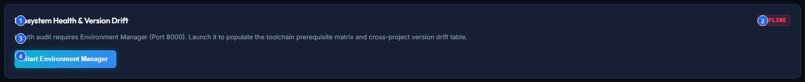
Health Matrix Numbered Reference
- Toolchain Prerequisites Section Header & Status: Overview header
inspecting host developer environment prerequisites with green
ALL PREREQUISITES VERIFIED badge (Python 3.12.10, Git 2.47.1, Node
22.12.0).
- Cross-Project Python Version Drift Matrix: Authoritative synchronization
table comparing installed package versions across
lemgendary-env-manager,
lemgendary-datasets, and lemgendary-training-suite. Displays package
names, target environments, and synchronization status pills (100%
synchronized, zero version drift).
- Desktop GUI Project Packages (NPM) Card: Audits the frontend dependencies
of
lemgendary-ai-studio-gui, such as @tauri-apps/api,
@tauri-apps/plugin-shell, @radix-ui/react-progress, modern-screenshot,
react, react-dom and zustand.
- Ecosystem Maintenance & Governance Controls: Nuclear-hardened maintenance
action buttons dispatched to port 8000 for safe package upgrades, cache
purging, git hook synchronization, and multi-gate ecosystem validation.
Callout bindings (control type; endpoint or action):
- 1. Toolchains Header (Section Heading; Platform audit): Flags whether all
developer toolchains (Python, Git, Node) meet requirements.
- 2. Python Drift Matrix (Comparison Table; Manifest scan): Compares Python
library versions across all backend sub-repositories.
- 3. Desktop GUI NPM Card (Package Table;
package.json audit): Displays
installed NPM package versions for the desktop GUI frontend.
- 4. Maintenance Controls (Action Buttons;
POST /api/...): One-click
maintenance buttons for upgrades, cache purge, and validation.
8.2 Ecosystem Maintenance & Governance Controls
The Health and Maintenance view provides nuclear-hardened ecosystem maintenance
controls backed by lemgendary-env-manager on port 8000:
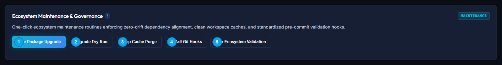
Ecosystem Maintenance Controls Numbered Reference
- Safe Package Upgrade Button: Dispatches
POST /api/update
(dry_run: false), applying dependency upgrades in dependency-safe reverse
topological order with automated rollback if pip check fails.
- Upgrade Dry Run Button: Dispatches
POST /api/update (dry_run: true),
computing the safe upgrade plan and highlighting potential reverse dependency
blockers without touching installed packages.
- Deep Cache Purge Button: Dispatches
POST /api/clean, recursively
purging __pycache__, temporary files, build residues, and staging
directories across all ecosystem repositories, reporting total bytes
reclaimed.
- Install Git Hooks Button: Dispatches
POST /api/hooks/install, ensuring
pre-commit hooks are active across all repositories to prevent commits that
fail zero-emoji, compilation, or linting gates.
- Run Ecosystem Validation Button: Dispatches
POST /api/validate,
executing the full multi-gate validation suite across all repositories and
reporting per-project gate status.
Callout bindings (control type; endpoint or action):
- 1. Safe Package Upgrade (Action Button;
POST /api/update
(dry_run: false)): Upgrades outdated packages safely with automated snapshot
rollback.
- 2. Upgrade Dry Run (Action Button;
POST /api/update (dry_run: true)):
Previews candidate package upgrades without altering disk state.
- 3. Deep Cache Purge (Action Button;
POST /api/clean): Purges bytecode,
build caches, and temporary staging artifacts.
- 4. Install Git Hooks (Action Button;
POST /api/hooks/install):
Synchronizes and repairs mandatory pre-commit validation hooks.
- 5. Run Ecosystem Validation (Action Button;
POST /api/validate):
Executes multi-gate compilation, zero-emoji, and schema validation.
9. Contextual UX Help & Interactive Hover Guidance System
Every single visual control across the LemGendary AI Studio GUI features
contextual interactive hover guidance engineered according to the Gardening
Model Rule:
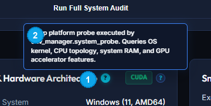
9.1 Interactive Hover Popovers & Safety Diagnostics
Contextual Help Numbered Reference
- Contextual Help Trigger Icon (
?): Subtle, non-intrusive icon button
positioned adjacent to card headers, input selectors, and action triggers.
Focusing or hovering this trigger instantly opens the contextual guidance
card.
- Interactive Floating Tooltip Bubble: High-elevation guidance card
detailing:
- What the action does in plain English with zero jargon.
- The underlying API endpoint or CLI script executed (
POST /api/... or
python tools/...).
- Memory, disk, and hardware considerations (e.g. temporary staging
requirements, VRAM allocation).
- Practical recommendations and safety boundaries for non-technical users.
Callout bindings (control type; endpoint or action):
- 1. Help Trigger Icon (Action Button;
onMouseEnter / onFocus): Subtle
? icon button triggering contextual explanation card.
- 2. Floating Guidance Bubble (Popover Card;
HelpTooltip.tsx): Displays
plain-English explanation, endpoints, and safety rules.
10. Permanent Offline Documentation Hub & Online Synchronization
Reliability requires that complete engineering documentation is accessible at
all times including on isolated workstations, offline air-gapped lab servers, or
during broadband outages.
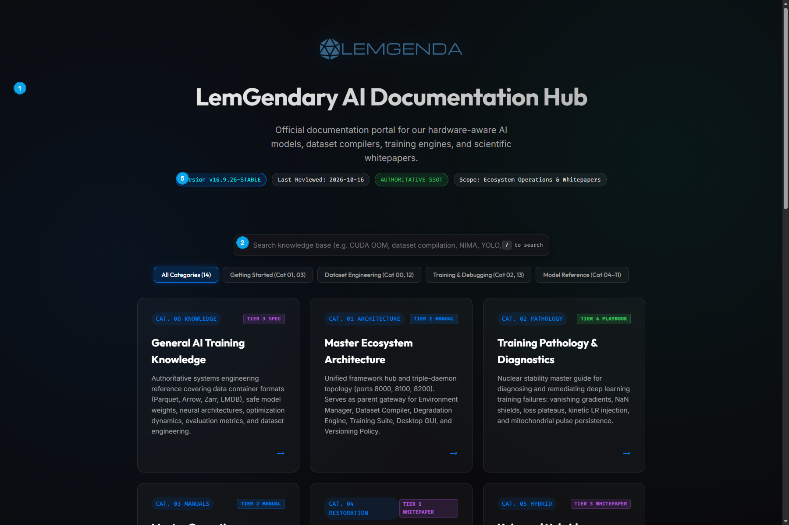
10.1 Local Static Offline Documentation Server
The LemGendary Environment Manager serves the Documentation Hub from the local
lemgendary-docs checkout. The header button asks it for the address
(GET /api/docs/status, field local_url) and opens that address in your
system browser. While the Environment Manager is offline, or when it reports no
docs checkout, the button is disabled and its tooltip gives the reason.
Documentation Hub Interface Numbered Reference
- Documentation Hub Header & Brand Identity: Displays the official
LemGendary AI Documentation Hub header and verified local status pill.
- Live Client-Side Search Bar: Instantaneous client-side search input
filtering documents in real time across titles, descriptions, and categories
(
Search documentation...).
- Category Navigation Filters: Segmented filter buttons enabling one-click
category filtering across
All Documents, Whitepapers, Manuals,
Architecture, Standards, and Guides.
- Document Article Cards: Rich documentation cards displaying canonical
document titles, category tags, word counts, estimated reading times, and
direct reading action links.
- Local Server Status & Network Indicators: Verifies offline local serving
readiness (
OFFLINE VERIFIED), guaranteeing zero external network
dependencies.
Callout bindings (control type; endpoint or action):
- 1. Hub Header (Header Title; None): Displays official documentation hub
identity and offline badge.
- 2. Live Search Bar (Search Input; Client-side filter): Filters all 46
scientific documents and manuals in real time.
- 3. Category Filters (Filter Buttons;
setCategoryFilter()): Restricts
article display by document category.
- 4. Document Cards (Article Card; Direct Link): Rich cards linking to
full-text papers and operator manuals.
- 5. Offline Status Indicator (Status Pill; Local server health): Confirms
100% offline document availability with zero external assets.
10.2 Live GitHub Pages Online Synchronization
For external collaboration, mobile reading, and research sharing, the
Documentation Hub is synchronized with GitHub Pages:
https://lemgenda.github.io/ai-training-whitepapers/index.html
Both local and web documentation portals share identical CSS styling, SVG
typography, and structural content, ensuring total parity across offline and
online environments.
11. Tripartite Multi-Sidecar Network Architecture
The LemGendary AI Studio GUI is one visual client for three background services.
Their addresses come from one registry (src/api/config.ts), so the same build
works with local, intranet or hosted services. Every request carries the header
X-LemGendary-Client: ai-studio-gui, which the services require for browser
writes:
+------------------------------------------------------------------+
| LemGendary AI Studio GUI |
| (Tauri / Rust / React / Vite) |
+------------------------------------------------------------------+
| | |
v v v
+------------------+ +------------------+ +------------------+
| Env Manager | | Dataset Compiler | | Training Suite |
| (Port 8000) | | (Port 8100) | | (Port 8200) |
+------------------+ +------------------+ +------------------+
| * Hardware Probe | | * Manifolds | | * Model Cards |
| * Venv Setup | | * WebP Transcode | | * Sawtooth Gov. |
| * Secrets Store | | * Shards | | * Ladders |
| * Docs Server | | * Kaggle Sync | | * Loss Curves |
| * Bug Reports | | | | |
+------------------+ +------------------+ +------------------+
11.1 Dynamic Configuration & Environment Overrides
Endpoint addresses and ports are completely decoupled from code literals.
Production and remote environments can override service locations via standard
environment variables:
VITE_ENV_MANAGER_URL: Base HTTP URL for the Environment Manager (default:
http://127.0.0.1:8000).VITE_DATASET_COMPILER_URL: Base HTTP URL for the Dataset Compiler Suite
(default: http://127.0.0.1:8100).VITE_TRAINING_SUITE_URL: Base HTTP URL for the Model Training Suite
(default: http://127.0.0.1:8200).
The toWebSocketUrl() utility parses HTTP/HTTPS URLs and maps them
automatically to corresponding ws:// or wss:// protocols, providing seamless
transition from local loopback ports to secure TLS cloud deployments.
11.2 Semantic Origin Routing & Telemetry Stream Governance
Telemetry event streams are classified using semantic origin routing rather than
brittle port number or regex guessing:
- LemGendary Model Training Suite logs carry the origin
training-suite and
appear in the training telemetry console.
- LemGendary Dataset Compiler Suite logs carry the origin
dataset-compiler and
appear in the compiler view's log panel.
- Consecutive rapid carriage-return progress ticks (
\r) roll up in-place via
rollupTelemetryEvents(), keeping the active progress state visible at the
terminal cursor while preserving discrete loss metrics, learning rates,
checkpoint saves, and milestone events in terminal history.
11.3 Typed API Client Contracts (src/api/client.ts)
The desktop application talks to the sidecars through typed asynchronous
TypeScript functions that all use sidecarFetch. For multi-objective
optimization, the client calls the Pareto Model Soup engine on the LemGendary
Model Training Suite:
export async function blendModelSoup(
modelKey: string,
): Promise<ModelSoupResult> {
const res = await sidecarFetch(
`${TRAINING_BASE}/api/models/${modelKey}/soup`,
{ method: "POST" },
);
if (!res.ok) {
throw new Error(`Failed to blend model soup: ${res.statusText}`);
}
return res.json();
}
This call interpolates the weights of specialized vault checkpoints
(vault_psnr.pth, vault_lpips.pth, vault_plcc.pth, vault_srcc.pth, and
others) on disk without retraining. ModelSoupResult stands for the returned
object with model_key, success and soup_checkpoint.
12. Automated Testing & Ecosystem Quality Assurance
To guarantee system stability, the LemGendary ecosystem includes extensive
automated test batteries across all projects. You can verify the health of the
entire suite at any time:
Desktop GUI Test Battery
The Desktop GUI includes dedicated Vitest unit and integration test suites:
cd lemgendary-ai-studio-gui
npm test
Release v2.10.19 runs 136 tests, covering the store, sidecar routing and
fallbacks, request field names against each sidecar's openapi.json, the clean
install dialog, the write-only secrets editor, the Report Issue form and
annotator, and a check that every CSS class used in the components has a rule.
Python Ecosystem Quality Assurance
You can run automated validation across all backend projects using the unified
CLI:
# Validate individual projects
lem-env validate --project lemgendary-env-manager
lem-env validate --project lemgendary-datasets
lem-env validate --project lemgendary-training-suite
lem-env validate --project lemgendary-ai-studio-gui
lem-env validate --project lemgendary-docs
# Or run complete multi-project ecosystem audit
lem-env validate
Documentation & Whitepaper Integrity Verification
The documentation test suite runs 38 automated validation gates:
pytest lemgendary-docs/tests/test_documentation.py
Every test verifies strict code compliance, dependency lockfile validity,
markdown link integrity, LaTeX formula rendering, and the absolute absence of
emojis across all codebases and documentation.
13. Reporting an Issue
When something does not work, the Report Issue form collects what the
maintainers need: your description, annotated screenshots and recent telemetry.
The LemGendary Environment Manager saves everything as a ZIP file on your
computer and opens your own mail client; no password or mail account is stored
in the app.
Click Report Issue in the header (header-btn-report-issue). The form opens
with Module set to the tab you were working in; change it if the problem
belongs elsewhere.
- Your email (
bug-modal-email): The address the maintainers can reply to.
- Module (
bug-modal-module): One entry per sidebar tab.
- What happened? (
bug-modal-description): At least 50 and at most 10,000
characters. The counter below the field shows how many you have typed.
Describe what you did, what you expected and what happened instead.
- Attach telemetry (
bug-modal-telemetry): On by default (section 13.3).
- Screenshots: Up to 5 annotated screenshots (section 13.2).
- Recording: One optional recording of the app window (section 13.6).
Outside the desktop app the field is disabled with the note "Screen
recording is available in the desktop app".
Note: The figure for this chapter (the Report Issue form, the annotator and the
success view) will be added with the next screenshot refresh.
13.2 Screenshots & Annotation
Click Capture screenshot (bug-modal-btn-add-screenshot). The app takes a
picture of its own window, leaving out the Report Issue form itself, and opens
the annotator:
- Drag over the picture (
annotator-canvas) to draw one highlight rectangle
around the problem. A new drag replaces the previous rectangle.
- Save (
annotator-btn-save) adds the picture to the form. It is stored as
WebP, or PNG where WebP export is not available. A picture over 5 MB is
halved in size, up to three times, until it fits.
- Retake (
annotator-btn-retake) captures the window again; Cancel
(annotator-btn-cancel) or Escape discards the capture and returns to the
form.
Each saved screenshot appears as a thumbnail with a Remove button. After 5
screenshots the capture button is disabled.
13.3 Telemetry
With Attach telemetry on, the form attaches the recent log events (up to the
last 200) as a CSV file with the columns timestamp, status, source and
message. Turn it off if the log contains information you do not want to share.
13.4 Sending & the Local ZIP Report
Click Send report (bug-modal-btn-submit). The form is checked first;
problems are shown under the matching field. The Environment Manager then:
- Saves the report as
bug_report_<timestamp>.zip in the bug-reports folder
at the workspace root. The archive holds report.csv, the screenshots, the
telemetry file and the recording, when attached.
- Opens your mail client with the recipient and subject filled in.
- Opens the
bug-reports folder in your file manager.
The success view shows the archive name and its path relative to the workspace,
the recipient and the subject. Attach the ZIP file to the mail and send it.
If the mail client did not open, use Copy address
(bug-modal-btn-copy-address) and Copy subject
(bug-modal-btn-copy-subject) and write the mail yourself; a note also tells
you when the folder did not open. Done closes the form and clears it.
Size limits: 5 screenshots of at most 5 MB each, telemetry at most 2 MB, and 80
MB for the whole report.
13.5 When Sending Fails
- Environment Manager is not running: Start it from the Dashboard service
tiles and send again; your input stays in the form.
- A field is rejected: The server's message appears under the field (for
example a description that is too short).
- Report too large: Remove a screenshot and try again.
- Other server errors: The message is shown at the top of the form.
13.6 Screen Recording
In the desktop app on Windows you can attach one short recording of the app
window (only this window, at most 60 seconds of recorded time):
- Click Start recording (
bug-modal-btn-start-recording). The Report Issue
form hides and a control bar (recording-control-bar) shows the state and
the elapsed time against the limit.
- Reproduce the problem. Pause (
recording-btn-pause) and Continue
(recording-btn-resume) stop and restart the clock; paused time does not
count.
- Click Stop and attach (
recording-btn-stop). The form returns with the
clip summary (bug-modal-recording-summary: length, resolution, size,
MP4). Remove recording (bug-modal-btn-remove-recording) discards it.
Recording stops by itself at the 60-second limit or when the capture fails; the
error appears in the form. The clip is H.264 MP4 at 24 frames per second,
scaled into 854x480, and is sent as recording.mp4 (the Environment Manager
accepts up to 50 MB). On macOS and Linux the recorder reports that recording
is not supported on this platform yet; describe the steps in the description
instead.